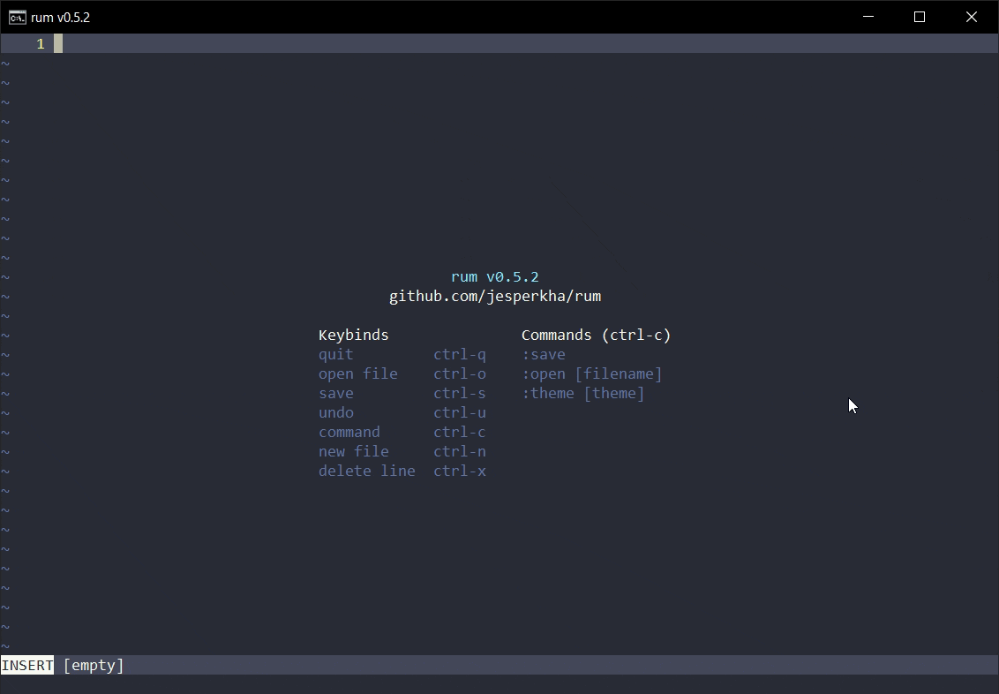

Editor
Rum
Terminal editor skrevet i C, 100% native for Windows, og uten andre biblioteker enn Windows APIet. Hele editoren er kun 64kB!

Studerer Cyber Sikkerhet ved Universitetet i Bergen.
Jeg heter Jesper Hammer. Jeg er 21 år gammel og studerer for en bachelorgrad i Cyber Sikkerhet ved Universitetet i Bergen. Jeg er aktiv i studentmiljøet og jobber for studentorganisasjonen echo. Hobbyer inkluderer fotografi, matlaging, musikk, og programmering.
Jobb og erfaring
Sommeren 2025 jobbet jeg som utvikler for Nordea Liv og Pensjon på et team med tre andre master studenter. Vi jobbet med å utvikle mikrotjenster for Nordeas nye distribuerte skyløsning som skal erstatte deres kjernesystem.
Jeg fikk erfaring med Java og Spring Boot, jobbe i et agilt team, og verktøy som Jira og Confluence. Jeg lærte å utvikle REST APIer som mikrotjenster og effektiv testing med JUnit, Mockito, og H2 databaser.
Verv
Jeg er medlem av hovedstyret i echo, studentorganisasjonen for informatikkstudenter ved Universitetet i Bergen. Vi jobber for å bedre studentmiljøet og tilbyr både sosiale og faglige arrangementer.
Webkom er en undergruppe av echo som utvikler echo sin nettside og andre in-house teknlogiske løsninger. Her har jeg fått mye erfaring med webutvikling og backend server-programmering med Go.
Sushi Kokk — Sabrura Sticks & Sushi
Jobbet som sushikokk i 6 måneder hos Sabrura Galleriet, midt i Bergen sentrum.
Har erfaring med stenging av kjøkken og hektiske verdager på Bergens mest traffikerte resturant.
Kokk — IKI Sørengkaia
Jobbet som assisterende kokk på et koreans-japansk fusion resturant konsept kalt IKI.
Var vikar for en sykemeldt kokk ut sommeren 2023.
Jeg håndterte åpning av kjøkken og lunsj-salg alene i løpet av sommeren.
Et utvalg av prosjekter som jeg har utviklet enten alene eller i et team.
For samarbeid, jobb, eller spørsmål — ta kontakt!